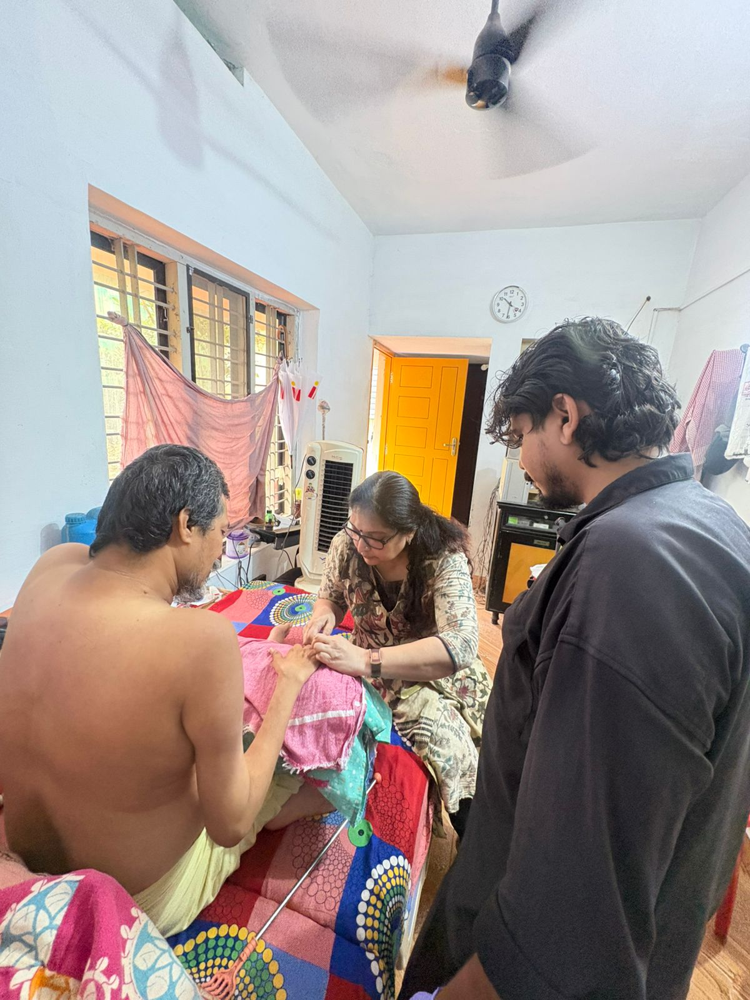
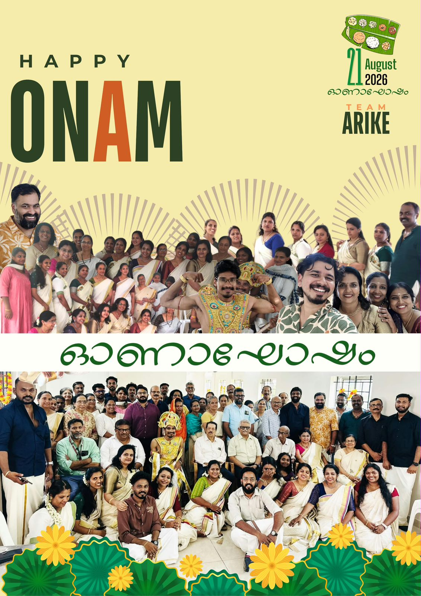
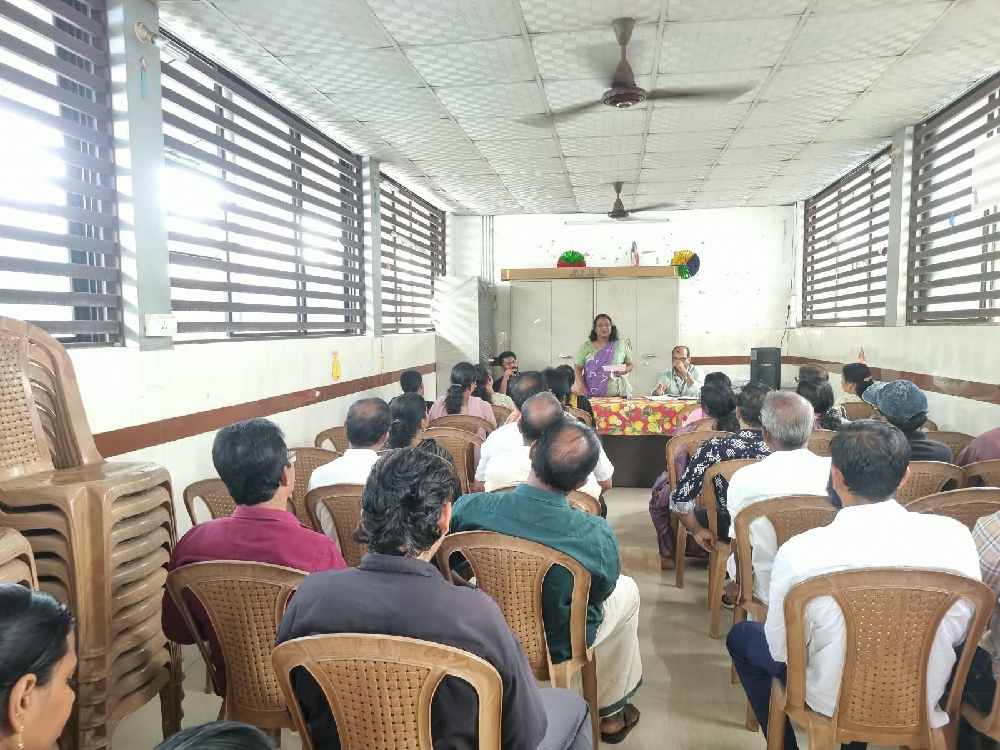

A beautician, a phone call, and a family who had waited months for someone to help safely.
Call us 24/7{{ phone }}
01 · Cover storyIssue {{ issue }} · {{ month }}
Restoring comfort through compassionate care
Every person carries a skill that can ease someone else's burden.
The Arike team recently received a call from the family of a bedbound person living with Spinal Muscular Atrophy (SMA). His fingernails and toenails had not been trimmed for several months. An earlier attempt had resulted in an accidental cut and bleeding, leaving the family understandably worried about trying again. They were looking for someone who could help safely and professionally.
The team remembered a conversation from several months earlier. During a visit to Arike, Dr. Sunil Kumar from IMA Cochin had mentioned that his wife, Padmaja, was a professional beautician who wanted to use her free time to support people who were unable to leave their homes and needed help with personal grooming.
When the Arike team reached out to Padmaja, she readily agreed. She visited the patient at home and, with patience and precision, trimmed, shaped and cleaned his fingernails and toenails, taking every precaution so that he felt no discomfort.

Mrs. Padmaja Sunilkumar provides professional grooming care at home.
“It's a wonderful feeling knowing a simple skill can bring someone real relief.”
Her visit did not end with grooming. She spent time with the patient and his family, listened to their concerns, and offered practical advice. For the patient it was a small but meaningful restoration of comfort. For his family it brought relief after months of worry.
Her words capture something at the heart of palliative care: care is not limited to medicines, procedures or clinical interventions. A beautician's skill, offered at the right moment, became a source of comfort — and helped restore a sense of normalcy and dignity.
There are many people in our communities who have skills, time and a willingness to help. Sometimes all that is needed is an opportunity. “I just hope that by sharing this, others feel inspired to step forward and do the same,” she says.
Volunteer diaries
സന്നദ്ധപ്രവർത്തകരുടെ കുറിപ്പുകൾ
Nafeesath
First visit with our team
This was my first experience in palliative care, and it really touched me. I realised that even in a small area there are many people who need care, support, and simply someone to be there for them. It made me understand that palliative care is something that can touch everyone's life at some point, and something we need to develop further across Kerala. This experience has inspired me to learn more and contribute wherever I can.
02 · Activities · August 2026
What we did this month
പ്രവർത്തനങ്ങൾ
6 events
7years
7 August · 7th anniversary
Seven years beside our neighbours
Arike marked its 7th anniversary — seven years of community-based palliative care. Members, volunteers, supporters and well-wishers came together to reflect on the work, and on our continued efforts to support families living with serious illnesses.
Team members and volunteers met at Vaduthala to review activities, discuss local initiatives and strengthen coordination across the zone.
19 August
Onam kit campaign at the IMA
Arike raised funds for the Onam kit initiative during the IMA general body meeting, supporting families in need with food kits.
21 August
An Onam spent together
IMA and Arike organised an Onam celebration for volunteers, supporters and contributors. A traditional pookalam, an onasadya and games brought the Arike community together in the spirit of the season.

23 August
21 Onam kits delivered
Dr. Geetha, Arun, Donal and volunteers distributed 21 food kits to families in need during the Onam season.

30 August
Sensitisation at Vyttila
Mr. Suhail and Mr. Donal led a session at the Dr. Palppu Kudumba Unit of the SNDP Shakha, introducing community-based palliative care.
03 · Care info · for families at home
Helping the patient stay hydrated
പരിചരണ കുറിപ്പ്
Adequate fluids help prevent dehydration and improve comfort. Offer small amounts of water or other preferred fluids often, rather than a large quantity at once.
{{ tip.n }}{{ tip.text }}
Call the care team if
the patient cannot drink at all, keeps vomiting, has difficulty swallowing, or shows signs of significant dehydration. Never force fluids.
04 · Support our cause
Free care at home, paid for together
ഞങ്ങളെ പിന്തുണയ്ക്കുക
With your support, Arike provides free home-based palliative care to patients within the Kochi Corporation limits. On average our team cares for 40 patients every day, at home. Even ₹10 lakh a month is not enough to reach all the families who need us.
Palliative care is not only about managing physical symptoms. We also help with medicines, nutrition, and the educational needs of children. You can become a monthly supporter from ₹500 a month.
Scan to give · UPI
Or bank transfer
A/C name
Arike Day Care Nurses
A/C no.
13800100459765
IFSC
FDRL0001380
Branch
Palarivattom, Federal Bank
UPI
arike9765@fbl
Give online
Scan or visit arikecare.org/donate
Mobility without barriers
Help us drive independence
A vehicle with wheelchair access is available for travel at no cost to the family. Support our running costs and make every journey possible. For info, call {{ phone }}
A heartfelt thank you
നന്ദി
Every act of kindness becomes a source of strength for the patients and families we serve. Your contributions, big and small, help us deliver dignified care to people facing serious health-related suffering.
43/707, P. K. Nair Road, Palarivattom, Ernakulam 682025 · info@arikecare.org · arikecare.org